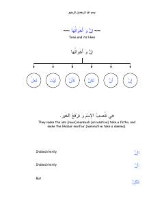

MGArab tili grammatikasi qoidalari va ularning qo'llanilishiga oid o'quv qo'llanma.
Ushbu kitob arab tili grammatikasini o'rganuvchilar uchun mo'ljallangan bo'lib, 'Inna va uning o'xshashlari hamda 'Dhu' so'zining ishlatilishi kabi mavzularni qamrab oladi. Qo'llanma qoidalarni tushuntirish uchun aniq misollar va grammatik tahlillardan foydalanadi.